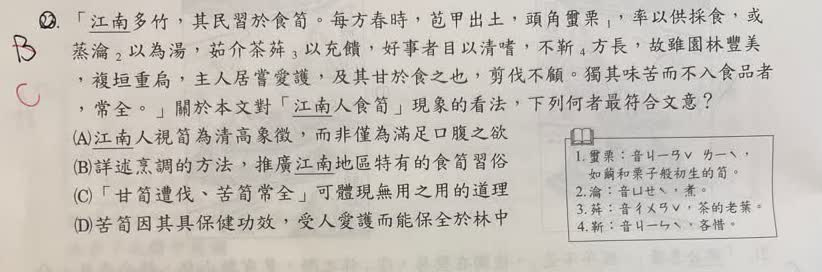

分享原卷｜第22題
完整原題
作答所需文章／材料
「江南多竹，其民習於食筍。每方春時，苞甲出土，頭角蠒栗¹，率以供採食，或蒸瀹²以為湯，茹介茶荈³以充饋，好事者目以清嗜，不靳⁴方長，故雖園林豐美，複垣重扃，主人居嘗愛護，及其甘於食之也，剪伐不顧。獨其味苦而不入食品者，常全。」 【原卷注釋】 1. 蠒栗：音ㄐㄧㄢˇ ㄌㄧˋ，如繭和栗子般初生的筍。 2. 瀹：音ㄩㄝˋ，煮。 3. 荈：音ㄔㄨㄢˇ，茶的老葉。 4. 靳：音ㄐㄧㄣˋ，吝惜。先想一想，再查看答案、解說與原圖
逐項解析
| 選項與原句 | 判讀 | 句意與判斷理由 |
|---|---|---|
| (A) 江南人視筍為清高象徵，而非僅為滿足口腹之欲 | 不選 | 文章後段明說因貪其美味而剪伐，不能只解讀成清高。 |
| (B) 詳述烹調的方法，推廣江南地區特有的食筍習俗 | 不選 | 烹調是鋪陳，主旨在甘筍遭伐與苦筍保全的對照。 |
| (C) 「甘筍遭伐、苦筍常全」可體現無用之用的道理 | 應選 | 苦筍看似無食用價值，反而保全，符合無用之用。 |
| (D) 苦筍因其具保健功效，受人愛護而能保全於林中 | 不選 | 原文沒有保健功效，也不是因受愛護而免採。 |
詳細說明與解題步驟
【白話翻譯】
江南竹子很多，當地人習慣吃筍。每到春天，包著筍殼的嫩筍剛冒出土，頭部像繭、栗一般，人們多採來吃，有的蒸煮成湯，當作菜蔬、茶食來供膳。喜愛風雅的人將吃筍視為清雅的嗜好，也不吝惜正在生長的筍。因此，即使園林茂盛，設有重重的牆與門，主人平時很愛護，一旦想享用筍的美味，還是照砍不誤。只有味苦、不能作食品的筍，常能保全。
【抓住轉折】
文章前半說人們如何喜愛、食用筍，最後卻以苦筍能保全作結。甜筍可食，是人眼中的「有用」，卻因此被採伐；苦筍不能食，看似「無用」，反而保住自己，正是C的無用之用。
【逐項排除】
A說並非滿足口腹之欲，與主人嘴饞便剪伐的描寫不合。B只抓住烹調細節，忽略結尾的反思，文章不是在推廣飲食習俗。D自行加入保健功效；原文說苦筍因味苦而未被採食，不是因保健而受保護。
【原AI翻譯訂正】
原圖寫「蠒栗」「茹介茶荈」「不靳」，不是AI誤讀的蝟栗、茶栟、不斷。靳是吝惜，不靳方長是連正在生長的嫩筍也不吝惜，不是單純說持續生長。原AI把本篇誤標為段成式《酉陽雜俎》；考選部收錄的同篇為陸樹聲〈苦竹記〉，不能與前題邵公故事混為一篇。
【核對依據】
教育部字典「靳」：https://dict.concised.moe.edu.tw/dictView.jsp?ID=23368&la=0&powerMode=0 。考選部105年同文題材（第10題）：https://wwwq.moex.gov.tw/exam/wHandExamQandA_File.ashx?c=201&code=105070&q=1&s=0101&t=Q 。本題原文及選項以本張原卷為準，不改成另一份試題的較長版本。
① 甘筍「有用」，卻因此遭採伐
人們喜歡吃筍，即使平日愛護園林、設有重牆與門，一想享用美味，仍剪伐不顧。可食的價值，反而成為被採伐的原因。
② 苦筍看似「無用」，反而保全
文中的苦筍因味苦、不入食品，常能保全。它不是因保健功效而受愛護，而是因人們不取來吃，免於被採伐。
③ 烹調細節是鋪陳，不是主旨
蒸煮、作湯等描寫，先說明人們如何食筍；結尾的甘、苦對照才是重點。B只抓飲食細節，忽略了苦筍能保全的反思。
④ 甘筍遭伐、苦筍保全：無用之用
答案 C：甘筍遭伐、苦筍常全，體現無用之用
- 在人眼中有食用價值，可能反而招來採伐。
- 看似沒有食用價值，卻得到保全自身的好處。
- 讀到結尾轉折，才能從食筍現象看出作者的反思。
核對註記：已依原卷或完整文字核對並獨立解題；對應教材課次未確認，歸綜合。
原圖（僅本題）
